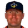
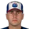

Franchise record book · ABL
San Juan Coquis
Seasons covered: 2002–2002. Only games played for this franchise count.
This club has no pre-2002 history in the export, so its record book is the 2002 season to date. Rate records need 3.1 PA or 1 inning per team game.
Home runs
| # | Player | Season | Team | Home runs |
|---|---|---|---|---|
| #1 | 2002 (ABL) |  San Juan Coquis San Juan Coquis | 9 | |
| #2 | 2002 (ABL) | San Juan Coquis | 8 | |
| #3 | 2002 (ABL) | San Juan Coquis | 6 | |
| #4 | 2002 (ABL) | San Juan Coquis | 6 | |
| #5 | 2002 (ABL) | San Juan Coquis | 3 | |
| #6 | 2002 (ABL) | San Juan Coquis | 3 | |
| #7 | 2002 (ABL) | San Juan Coquis | 3 | |
| #8 | 2002 (ABL) | San Juan Coquis | 3 | |
| #9 | 2002 (ABL) | San Juan Coquis | 2 | |
| #10 |  Scott Sheldon • | 2002 (ABL) | San Juan Coquis | 1 |
Hits
| # | Player | Season | Team | Hits |
|---|---|---|---|---|
| #1 | 2002 (ABL) | San Juan Coquis | 51 | |
| #2 | 2002 (ABL) | San Juan Coquis | 44 | |
| #3 | 2002 (ABL) | San Juan Coquis | 39 | |
| #4 | 2002 (ABL) | San Juan Coquis | 37 | |
| #5 | 2002 (ABL) | San Juan Coquis | 37 | |
| #6 | 2002 (ABL) | San Juan Coquis | 33 | |
| #7 | 2002 (ABL) | San Juan Coquis | 32 | |
| #8 | 2002 (ABL) | San Juan Coquis | 32 | |
| #9 | 2002 (ABL) | San Juan Coquis | 23 | |
| #10 | 2002 (ABL) | San Juan Coquis | 17 |
RBI
| # | Player | Season | Team | RBI |
|---|---|---|---|---|
| #1 | 2002 (ABL) | San Juan Coquis | 30 | |
| #2 | 2002 (ABL) | San Juan Coquis | 29 | |
| #3 | 2002 (ABL) | San Juan Coquis | 28 | |
| #4 | 2002 (ABL) | San Juan Coquis | 20 | |
| #5 | 2002 (ABL) | San Juan Coquis | 17 | |
| #6 | 2002 (ABL) | San Juan Coquis | 14 | |
| #7 | 2002 (ABL) | San Juan Coquis | 13 | |
| #8 | 2002 (ABL) | San Juan Coquis | 13 | |
| #9 | 2002 (ABL) | San Juan Coquis | 12 | |
| #10 | 2002 (ABL) | San Juan Coquis | 10 |
Runs
| # | Player | Season | Team | Runs |
|---|---|---|---|---|
| #1 | 2002 (ABL) | San Juan Coquis | 27 | |
| #2 | 2002 (ABL) | San Juan Coquis | 25 | |
| #3 | 2002 (ABL) | San Juan Coquis | 23 | |
| #4 | 2002 (ABL) | San Juan Coquis | 23 | |
| #5 | 2002 (ABL) | San Juan Coquis | 21 | |
| #6 | 2002 (ABL) | San Juan Coquis | 20 | |
| #7 | 2002 (ABL) | San Juan Coquis | 15 | |
| #8 | 2002 (ABL) | San Juan Coquis | 13 | |
| #9 | 2002 (ABL) | San Juan Coquis | 12 | |
| #10 | 2002 (ABL) | San Juan Coquis | 11 |
Stolen bases
| # | Player | Season | Team | Stolen bases |
|---|---|---|---|---|
| #1 | 2002 (ABL) | San Juan Coquis | 9 | |
| #2 | 2002 (ABL) | San Juan Coquis | 6 | |
| #3 | 2002 (ABL) | San Juan Coquis | 6 | |
| #4 | 2002 (ABL) | San Juan Coquis | 5 | |
| #5 | 2002 (ABL) | San Juan Coquis | 4 | |
| #6 | 2002 (ABL) | San Juan Coquis | 4 | |
| #7 | 2002 (ABL) | San Juan Coquis | 3 | |
| #8 | 2002 (ABL) | San Juan Coquis | 3 | |
| #9 | 2002 (ABL) | San Juan Coquis | 3 | |
| #10 | 2002 (ABL) | San Juan Coquis | 3 |
Doubles
| # | Player | Season | Team | Doubles |
|---|---|---|---|---|
| #1 | 2002 (ABL) | San Juan Coquis | 9 | |
| #2 | 2002 (ABL) | San Juan Coquis | 9 | |
| #3 | 2002 (ABL) | San Juan Coquis | 8 | |
| #4 | 2002 (ABL) | San Juan Coquis | 7 | |
| #5 | 2002 (ABL) | San Juan Coquis | 7 | |
| #6 | 2002 (ABL) | San Juan Coquis | 6 | |
| #7 | 2002 (ABL) | San Juan Coquis | 6 | |
| #8 | 2002 (ABL) | San Juan Coquis | 5 | |
| #9 | 2002 (ABL) | San Juan Coquis | 4 | |
| #10 | 2002 (ABL) | San Juan Coquis | 3 |
Triples
| # | Player | Season | Team | Triples |
|---|---|---|---|---|
| #1 | 2002 (ABL) | San Juan Coquis | 4 | |
| #2 | 2002 (ABL) | San Juan Coquis | 3 | |
| #3 | 2002 (ABL) | San Juan Coquis | 1 | |
| #4 | 2002 (ABL) | San Juan Coquis | 1 | |
| #5 | 2002 (ABL) | San Juan Coquis | 1 | |
| #6 | 2002 (ABL) | San Juan Coquis | 0 | |
| #7 | Scott Sheldon • | 2002 (ABL) | San Juan Coquis | 0 |
| #8 | 2002 (ABL) | San Juan Coquis | 0 | |
| #9 | 2002 (ABL) | San Juan Coquis | 0 | |
| #10 | 2002 (ABL) | San Juan Coquis | 0 |
Walks
| # | Player | Season | Team | Walks |
|---|---|---|---|---|
| #1 | 2002 (ABL) | San Juan Coquis | 28 | |
| #2 | 2002 (ABL) | San Juan Coquis | 18 | |
| #3 | 2002 (ABL) | San Juan Coquis | 18 | |
| #4 | 2002 (ABL) | San Juan Coquis | 17 | |
| #5 | 2002 (ABL) | San Juan Coquis | 14 | |
| #6 | 2002 (ABL) | San Juan Coquis | 14 | |
| #7 | 2002 (ABL) | San Juan Coquis | 12 | |
| #8 | 2002 (ABL) | San Juan Coquis | 9 | |
| #9 | 2002 (ABL) | San Juan Coquis | 7 | |
| #10 | 2002 (ABL) | San Juan Coquis | 5 |
Total bases
| # | Player | Season | Team | Total bases |
|---|---|---|---|---|
| #1 | 2002 (ABL) | San Juan Coquis | 76 | |
| #2 | 2002 (ABL) | San Juan Coquis | 71 | |
| #3 | 2002 (ABL) | San Juan Coquis | 69 | |
| #4 | 2002 (ABL) | San Juan Coquis | 65 | |
| #5 | 2002 (ABL) | San Juan Coquis | 64 | |
| #6 | 2002 (ABL) | San Juan Coquis | 54 | |
| #7 | 2002 (ABL) | San Juan Coquis | 50 | |
| #8 | 2002 (ABL) | San Juan Coquis | 47 | |
| #9 | 2002 (ABL) | San Juan Coquis | 35 | |
| #10 | 2002 (ABL) | San Juan Coquis | 27 |
Batting average qualified
| # | Player | Season | Team | Batting average |
|---|---|---|---|---|
| #1 | 2002 (ABL) | San Juan Coquis | .327 | |
| #2 | 2002 (ABL) | San Juan Coquis | .295 | |
| #3 | 2002 (ABL) | San Juan Coquis | .289 | |
| #4 | 2002 (ABL) | San Juan Coquis | .273 | |
| #5 | 2002 (ABL) | San Juan Coquis | .269 | |
| #6 | 2002 (ABL) | San Juan Coquis | .264 | |
| #7 | 2002 (ABL) | San Juan Coquis | .254 | |
| #8 | 2002 (ABL) | San Juan Coquis | .253 |
On-base % qualified
| # | Player | Season | Team | On-base % |
|---|---|---|---|---|
| #1 | 2002 (ABL) | San Juan Coquis | .400 | |
| #2 | 2002 (ABL) | San Juan Coquis | .384 | |
| #3 | 2002 (ABL) | San Juan Coquis | .359 | |
| #4 | 2002 (ABL) | San Juan Coquis | .348 | |
| #5 | 2002 (ABL) | San Juan Coquis | .345 | |
| #6 | 2002 (ABL) | San Juan Coquis | .343 | |
| #7 | 2002 (ABL) | San Juan Coquis | .341 | |
| #8 | 2002 (ABL) | San Juan Coquis | .315 |
Slugging % qualified
| # | Player | Season | Team | Slugging % |
|---|---|---|---|---|
| #1 | 2002 (ABL) | San Juan Coquis | .516 | |
| #2 | 2002 (ABL) | San Juan Coquis | .510 | |
| #3 | 2002 (ABL) | San Juan Coquis | .507 | |
| #4 | 2002 (ABL) | San Juan Coquis | .500 | |
| #5 | 2002 (ABL) | San Juan Coquis | .446 | |
| #6 | 2002 (ABL) | San Juan Coquis | .442 | |
| #7 | 2002 (ABL) | San Juan Coquis | .395 | |
| #8 | 2002 (ABL) | San Juan Coquis | .325 |
OPS qualified
| # | Player | Season | Team | OPS |
|---|---|---|---|---|
| #1 | 2002 (ABL) | San Juan Coquis | .891 | |
| #2 | 2002 (ABL) | San Juan Coquis | .869 | |
| #3 | 2002 (ABL) | San Juan Coquis | .861 | |
| #4 | 2002 (ABL) | San Juan Coquis | .842 | |
| #5 | 2002 (ABL) | San Juan Coquis | .841 | |
| #6 | 2002 (ABL) | San Juan Coquis | .762 | |
| #7 | 2002 (ABL) | San Juan Coquis | .743 | |
| #8 | 2002 (ABL) | San Juan Coquis | .668 |
WAR (OOTP)
| # | Player | Season | Team | WAR (OOTP) |
|---|---|---|---|---|
| #1 | 2002 (ABL) | San Juan Coquis | 0.7 | |
| #2 | 2002 (ABL) | San Juan Coquis | 0.6 | |
| #3 | 2002 (ABL) | San Juan Coquis | 0.6 | |
| #4 | 2002 (ABL) | San Juan Coquis | 0.4 | |
| #5 | 2002 (ABL) | San Juan Coquis | 0.3 | |
| #6 | 2002 (ABL) | San Juan Coquis | 0.3 | |
| #7 | 2002 (ABL) | San Juan Coquis | 0.3 | |
| #8 |  Humberto Cota • | 2002 (ABL) | San Juan Coquis | 0.1 |
| #9 | 2002 (ABL) | San Juan Coquis | 0.1 | |
| #10 | Scott Sheldon • | 2002 (ABL) | San Juan Coquis | 0.0 |
Wins
| # | Player | Season | Team | Wins |
|---|---|---|---|---|
| #1 | 2002 (ABL) | San Juan Coquis | 5 | |
| #2 | 2002 (ABL) | San Juan Coquis | 4 | |
| #3 | 2002 (ABL) | San Juan Coquis | 4 | |
| #4 | 2002 (ABL) | San Juan Coquis | 2 | |
| #5 | 2002 (ABL) | San Juan Coquis | 2 | |
| #6 | 2002 (ABL) | San Juan Coquis | 2 | |
| #7 | 2002 (ABL) | San Juan Coquis | 1 | |
| #8 | 2002 (ABL) | San Juan Coquis | 0 | |
| #9 | 2002 (ABL) | San Juan Coquis | 0 | |
| #10 | 2002 (ABL) | San Juan Coquis | 0 |
Strikeouts
| # | Player | Season | Team | Strikeouts |
|---|---|---|---|---|
| #1 | 2002 (ABL) | San Juan Coquis | 57 | |
| #2 | 2002 (ABL) | San Juan Coquis | 46 | |
| #3 | 2002 (ABL) | San Juan Coquis | 31 | |
| #4 | 2002 (ABL) | San Juan Coquis | 26 | |
| #5 | 2002 (ABL) | San Juan Coquis | 24 | |
| #6 | 2002 (ABL) | San Juan Coquis | 20 | |
| #7 | 2002 (ABL) | San Juan Coquis | 13 | |
| #8 | 2002 (ABL) | San Juan Coquis | 10 | |
| #9 | 2002 (ABL) | San Juan Coquis | 10 | |
| #10 | 2002 (ABL) | San Juan Coquis | 10 |
Saves
| # | Player | Season | Team | Saves |
|---|---|---|---|---|
| #1 | 2002 (ABL) | San Juan Coquis | 6 | |
| #2 | 2002 (ABL) | San Juan Coquis | 1 | |
| #3 | 2002 (ABL) | San Juan Coquis | 0 | |
| #4 | 2002 (ABL) | San Juan Coquis | 0 | |
| #5 | 2002 (ABL) | San Juan Coquis | 0 | |
| #6 | 2002 (ABL) | San Juan Coquis | 0 | |
| #7 | 2002 (ABL) | San Juan Coquis | 0 | |
| #8 | 2002 (ABL) | San Juan Coquis | 0 | |
| #9 | 2002 (ABL) | San Juan Coquis | 0 | |
| #10 | 2002 (ABL) | San Juan Coquis | 0 |
Innings
| # | Player | Season | Team | Innings |
|---|---|---|---|---|
| #1 | 2002 (ABL) | San Juan Coquis | 65.2 | |
| #2 | 2002 (ABL) | San Juan Coquis | 48.1 | |
| #3 | 2002 (ABL) | San Juan Coquis | 43.2 | |
| #4 | 2002 (ABL) | San Juan Coquis | 42.2 | |
| #5 | 2002 (ABL) | San Juan Coquis | 42.1 | |
| #6 | 2002 (ABL) | San Juan Coquis | 21.0 | |
| #7 | 2002 (ABL) | San Juan Coquis | 16.2 | |
| #8 | 2002 (ABL) | San Juan Coquis | 16.1 | |
| #9 | 2002 (ABL) | San Juan Coquis | 14.2 | |
| #10 | 2002 (ABL) | San Juan Coquis | 12.0 |
Complete games
| # | Player | Season | Team | Complete games |
|---|---|---|---|---|
| #1 | 2002 (ABL) | San Juan Coquis | 1 | |
| #2 | 2002 (ABL) | San Juan Coquis | 1 | |
| #3 | 2002 (ABL) | San Juan Coquis | 0 | |
| #4 | 2002 (ABL) | San Juan Coquis | 0 | |
| #5 | 2002 (ABL) | San Juan Coquis | 0 | |
| #6 | 2002 (ABL) | San Juan Coquis | 0 | |
| #7 | 2002 (ABL) | San Juan Coquis | 0 | |
| #8 | 2002 (ABL) | San Juan Coquis | 0 | |
| #9 | 2002 (ABL) | San Juan Coquis | 0 | |
| #10 | 2002 (ABL) | San Juan Coquis | 0 |
Shutouts
| # | Player | Season | Team | Shutouts |
|---|---|---|---|---|
| #1 | 2002 (ABL) | San Juan Coquis | 1 | |
| #2 | 2002 (ABL) | San Juan Coquis | 0 | |
| #3 | 2002 (ABL) | San Juan Coquis | 0 | |
| #4 | 2002 (ABL) | San Juan Coquis | 0 | |
| #5 | 2002 (ABL) | San Juan Coquis | 0 | |
| #6 | 2002 (ABL) | San Juan Coquis | 0 | |
| #7 | 2002 (ABL) | San Juan Coquis | 0 | |
| #8 | 2002 (ABL) | San Juan Coquis | 0 | |
| #9 | 2002 (ABL) | San Juan Coquis | 0 | |
| #10 | 2002 (ABL) | San Juan Coquis | 0 |
ERA qualified
| # | Player | Season | Team | ERA |
|---|---|---|---|---|
| #1 | 2002 (ABL) | San Juan Coquis | 3.50 | |
| #2 | 2002 (ABL) | San Juan Coquis | 3.70 | |
| #3 | 2002 (ABL) | San Juan Coquis | 4.47 | |
| #4 | 2002 (ABL) | San Juan Coquis | 6.75 | |
| #5 | 2002 (ABL) | San Juan Coquis | 7.87 |
WHIP qualified
| # | Player | Season | Team | WHIP |
|---|---|---|---|---|
| #1 | 2002 (ABL) | San Juan Coquis | 1.17 | |
| #2 | 2002 (ABL) | San Juan Coquis | 1.34 | |
| #3 | 2002 (ABL) | San Juan Coquis | 1.37 | |
| #4 | 2002 (ABL) | San Juan Coquis | 1.71 | |
| #5 | 2002 (ABL) | San Juan Coquis | 1.77 |
K/9 qualified
| # | Player | Season | Team | K/9 |
|---|---|---|---|---|
| #1 | 2002 (ABL) | San Juan Coquis | 8.6 | |
| #2 | 2002 (ABL) | San Juan Coquis | 7.8 | |
| #3 | 2002 (ABL) | San Juan Coquis | 6.4 | |
| #4 | 2002 (ABL) | San Juan Coquis | 5.5 | |
| #5 | 2002 (ABL) | San Juan Coquis | 5.1 |
WAR (OOTP)
| # | Player | Season | Team | WAR (OOTP) |
|---|---|---|---|---|
| #1 | 2002 (ABL) | San Juan Coquis | 1.3 | |
| #2 | 2002 (ABL) | San Juan Coquis | 1.2 | |
| #3 | 2002 (ABL) | San Juan Coquis | 0.7 | |
| #4 | 2002 (ABL) | San Juan Coquis | 0.7 | |
| #5 | 2002 (ABL) | San Juan Coquis | 0.6 | |
| #6 | 2002 (ABL) | San Juan Coquis | 0.2 | |
| #7 | 2002 (ABL) | San Juan Coquis | 0.1 | |
| #8 | 2002 (ABL) | San Juan Coquis | 0.1 | |
| #9 | 2002 (ABL) | San Juan Coquis | 0.1 | |
| #10 | 2002 (ABL) | San Juan Coquis | 0.0 |
Home runs
| # | Player | Years | Home runs |
|---|---|---|---|
| #1 | 1995–02 | 9 | |
| #2 | 2001–02 | 8 | |
| #3 | 1998–02 | 6 | |
| #4 | 2000–02 | 6 | |
| #5 | 2001–02 | 3 | |
| #6 | 1992–02 | 3 | |
| #7 | 1996–02 | 3 | |
| #8 | 2002–02 | 3 | |
| #9 | 2001–02 | 2 | |
| #10 | Scott Sheldon • | 1997–02 | 1 |
Hits
| # | Player | Years | Hits |
|---|---|---|---|
| #1 | 1996–02 | 51 | |
| #2 | 1995–02 | 44 | |
| #3 | 2001–02 | 39 | |
| #4 | 1998–02 | 37 | |
| #5 | 2000–02 | 37 | |
| #6 | 2001–02 | 33 | |
| #7 | 1992–02 | 32 | |
| #8 | 2001–02 | 32 | |
| #9 | 2000–02 | 23 | |
| #10 | 2002–02 | 17 |
RBI
| # | Player | Years | RBI |
|---|---|---|---|
| #1 | 1998–02 | 30 | |
| #2 | 2000–02 | 29 | |
| #3 | 1995–02 | 28 | |
| #4 | 2001–02 | 20 | |
| #5 | 1992–02 | 17 | |
| #6 | 1996–02 | 14 | |
| #7 | 2001–02 | 13 | |
| #8 | 2002–02 | 13 | |
| #9 | 2001–02 | 12 | |
| #10 | 2000–02 | 10 |
Runs
| # | Player | Years | Runs |
|---|---|---|---|
| #1 | 1996–02 | 27 | |
| #2 | 2001–02 | 25 | |
| #3 | 2001–02 | 23 | |
| #4 | 1995–02 | 23 | |
| #5 | 1998–02 | 21 | |
| #6 | 2000–02 | 20 | |
| #7 | 2000–02 | 15 | |
| #8 | 2001–02 | 13 | |
| #9 | 2002–02 | 12 | |
| #10 | 1992–02 | 11 |
Stolen bases
| # | Player | Years | Stolen bases |
|---|---|---|---|
| #1 | 1996–02 | 9 | |
| #2 | 2001–02 | 6 | |
| #3 | 2002–02 | 6 | |
| #4 | 2001–02 | 5 | |
| #5 | 1998–02 | 4 | |
| #6 | 2002–02 | 4 | |
| #7 | 2001–02 | 3 | |
| #8 | 1995–02 | 3 | |
| #9 | 2000–02 | 3 | |
| #10 | 2002–02 | 3 |
Doubles
| # | Player | Years | Doubles |
|---|---|---|---|
| #1 | 2000–02 | 9 | |
| #2 | 1996–02 | 9 | |
| #3 | 1998–02 | 8 | |
| #4 | 2001–02 | 7 | |
| #5 | 2000–02 | 7 | |
| #6 | 2001–02 | 6 | |
| #7 | 1992–02 | 6 | |
| #8 | 2001–02 | 5 | |
| #9 | 2002–02 | 4 | |
| #10 | 1995–02 | 3 |
Triples
| # | Player | Years | Triples |
|---|---|---|---|
| #1 | 1998–02 | 4 | |
| #2 | 2001–02 | 3 | |
| #3 | 2001–02 | 1 | |
| #4 | 1995–02 | 1 | |
| #5 | 2000–02 | 1 | |
| #6 | 2002–02 | 0 | |
| #7 | Scott Sheldon • | 1997–02 | 0 |
| #8 | 2000–02 | 0 | |
| #9 | 1992–02 | 0 | |
| #10 | 2001–02 | 0 |
Walks
| # | Player | Years | Walks |
|---|---|---|---|
| #1 | 1998–02 | 28 | |
| #2 | 2001–02 | 18 | |
| #3 | 1996–02 | 18 | |
| #4 | 2001–02 | 17 | |
| #5 | 1992–02 | 14 | |
| #6 | 1995–02 | 14 | |
| #7 | 2000–02 | 12 | |
| #8 | 2000–02 | 9 | |
| #9 | 2001–02 | 7 | |
| #10 | 2001–02 | 5 |
Total bases
| # | Player | Years | Total bases |
|---|---|---|---|
| #1 | 1995–02 | 76 | |
| #2 | 1998–02 | 71 | |
| #3 | 1996–02 | 69 | |
| #4 | 2001–02 | 65 | |
| #5 | 2000–02 | 64 | |
| #6 | 2001–02 | 54 | |
| #7 | 2001–02 | 50 | |
| #8 | 1992–02 | 47 | |
| #9 | 2000–02 | 35 | |
| #10 | 2002–02 | 27 |
Batting average min 2,000 PA
| # | Player | Years | Batting average |
|---|
On-base % min 2,000 PA
| # | Player | Years | On-base % |
|---|
Slugging % min 2,000 PA
| # | Player | Years | Slugging % |
|---|
OPS min 2,000 PA
| # | Player | Years | OPS |
|---|
WAR (OOTP)
| # | Player | Years | WAR (OOTP) |
|---|---|---|---|
| #1 | 1998–02 | 0.7 | |
| #2 | 2001–02 | 0.6 | |
| #3 | 2000–02 | 0.6 | |
| #4 | 2002–02 | 0.4 | |
| #5 | 2001–02 | 0.3 | |
| #6 | 1996–02 | 0.3 | |
| #7 | 1995–02 | 0.3 | |
| #8 | Humberto Cota • | 2001–02 | 0.1 |
| #9 | 2000–02 | 0.1 | |
| #10 | Scott Sheldon • | 1997–02 | 0.0 |
Wins
| # | Player | Years | Wins |
|---|---|---|---|
| #1 | 1991–02 | 5 | |
| #2 | 1999–02 | 4 | |
| #3 | 2002–02 | 4 | |
| #4 | 1998–02 | 2 | |
| #5 | 1991–02 | 2 | |
| #6 | 2000–02 | 2 | |
| #7 | 1993–02 | 1 | |
| #8 | 2001–02 | 0 | |
| #9 | 1999–02 | 0 | |
| #10 | 2000–02 | 0 |
Strikeouts
| # | Player | Years | Strikeouts |
|---|---|---|---|
| #1 | 1991–02 | 57 | |
| #2 | 2000–02 | 46 | |
| #3 | 2002–02 | 31 | |
| #4 | 1999–02 | 26 | |
| #5 | 1998–02 | 24 | |
| #6 | 1991–02 | 20 | |
| #7 | 1993–02 | 13 | |
| #8 | 1999–02 | 10 | |
| #9 | 1996–02 | 10 | |
| #10 | 1998–02 | 10 |
Saves
| # | Player | Years | Saves |
|---|---|---|---|
| #1 | 1993–02 | 6 | |
| #2 | 1999–02 | 1 | |
| #3 | 1999–02 | 0 | |
| #4 | 1998–02 | 0 | |
| #5 | 2001–02 | 0 | |
| #6 | 1991–02 | 0 | |
| #7 | 2000–02 | 0 | |
| #8 | 1991–02 | 0 | |
| #9 | 1996–02 | 0 | |
| #10 | 2000–02 | 0 |
Innings
| # | Player | Years | Innings |
|---|---|---|---|
| #1 | 1991–02 | 65.2 | |
| #2 | 2000–02 | 48.1 | |
| #3 | 2002–02 | 43.2 | |
| #4 | 1999–02 | 42.2 | |
| #5 | 1998–02 | 42.1 | |
| #6 | 1991–02 | 21.0 | |
| #7 | 1999–02 | 16.2 | |
| #8 | 1998–02 | 16.1 | |
| #9 | 1999–02 | 14.2 | |
| #10 | 1993–02 | 12.0 |
Complete games
| # | Player | Years | Complete games |
|---|---|---|---|
| #1 | 1991–02 | 1 | |
| #2 | 2000–02 | 1 | |
| #3 | 1999–02 | 0 | |
| #4 | 1998–02 | 0 | |
| #5 | 2001–02 | 0 | |
| #6 | 1993–02 | 0 | |
| #7 | 1991–02 | 0 | |
| #8 | 1999–02 | 0 | |
| #9 | 2000–02 | 0 | |
| #10 | 1996–02 | 0 |
Shutouts
| # | Player | Years | Shutouts |
|---|---|---|---|
| #1 | 2000–02 | 1 | |
| #2 | 1999–02 | 0 | |
| #3 | 1998–02 | 0 | |
| #4 | 2001–02 | 0 | |
| #5 | 1993–02 | 0 | |
| #6 | 1991–02 | 0 | |
| #7 | 1999–02 | 0 | |
| #8 | 2000–02 | 0 | |
| #9 | 1991–02 | 0 | |
| #10 | 1996–02 | 0 |
ERA min 500 IP
| # | Player | Years | ERA |
|---|
WHIP min 500 IP
| # | Player | Years | WHIP |
|---|
K/9 min 500 IP
| # | Player | Years | K/9 |
|---|
WAR (OOTP)
| # | Player | Years | WAR (OOTP) |
|---|---|---|---|
| #1 | 1991–02 | 1.3 | |
| #2 | 2000–02 | 1.2 | |
| #3 | 2002–02 | 0.7 | |
| #4 | 1998–02 | 0.7 | |
| #5 | 1999–02 | 0.6 | |
| #6 | 1993–02 | 0.2 | |
| #7 | 2000–02 | 0.1 | |
| #8 | 1999–02 | 0.1 | |
| #9 | 1999–02 | 0.1 | |
| #10 | 1996–02 | 0.0 |